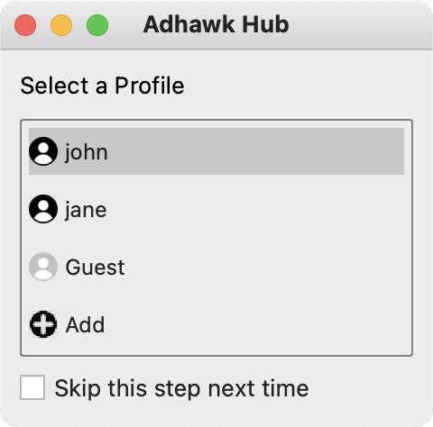
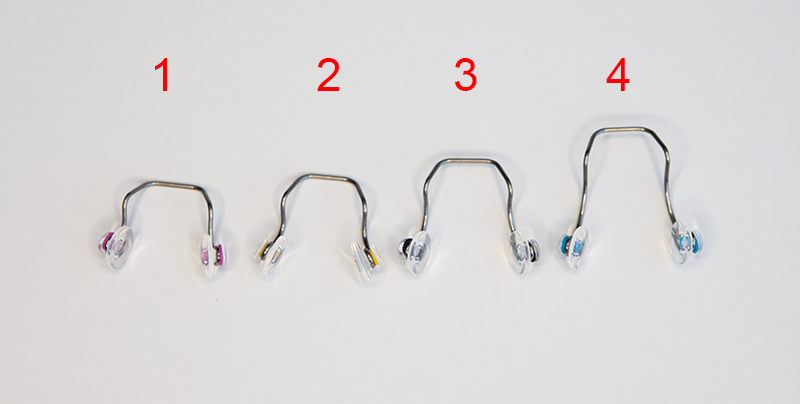
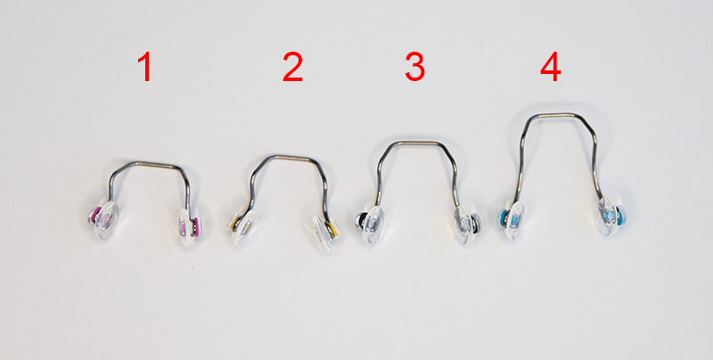
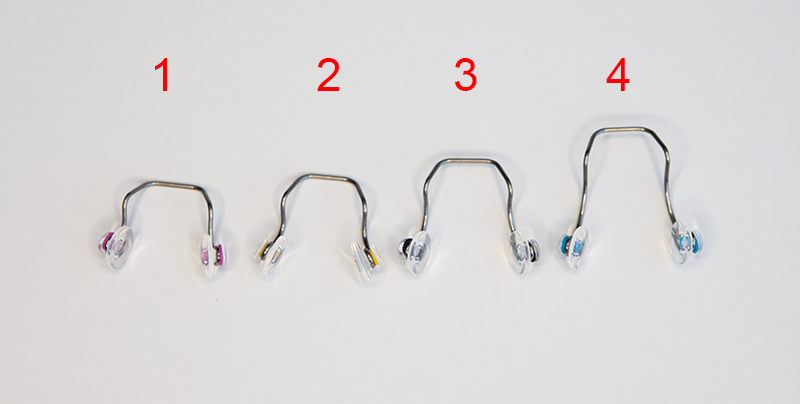

This document describes the operation of the AdHawk MindLink glasses. The AdHawk MindLink glasses kit contains a pair of eye tracking glasses capable of streaming gaze from AdHawk’s camera-free eye tracking sensors and video from the front-facing camera to a PC or the included Android mobile device. Using the eye tracking glasses and the AdHawk Hub software on either PC or Android, an eye tracking experience can be viewed in real-time or recorded for later.
Product description
The AdHawk MindLink kit includes all of the necessary hardware and software required to record and review eye tracking data with the AdHawk MindLink glasses.
Kit overview
AdHawk MindLink glasses
The AdHawk MindLink glasses can be plugged into a computer or the included mobile device using a Micro USB cable. Each pair of glasses contains binocular eye tracking hardware to generate eye tracking output using AdHawk’s unique camera-free eye tracking technology.
Smartphone
The included smartphone comes pre-loaded with the AdHawk Hub software and allows users to record eye tracking sessions in a mobile form factor. The included smartphone has been tested for interoperability and is the recommended device to be used with the AdHawk system. Other smartphones may be supported, depending upon their hardware and operating system (see Smartphone support)
Calibration fixture
The AdHawk MindLink eye tracker hardware occasionally needs to be calibrated using a process called device calibration. This process uses a plastic calibration grid fixture included as part of the AdHawk MindLink kit, as well as AdHawk Hub for desktop.
Note that device calibration optimizes parameters related to the eye tracking hardware, while gaze calibration (or, more commonly, just calibration) optimizes user-related parameters to more closely match the eye tracker signal to your gaze. These two types of calibration are not related.
The AdHawk Hub for desktop software will alert you when a device calibration is required.
Nosepieces
The kit ships with a set of replaceable nosepieces. The default nosepiece (black) comes pre-installed in the glasses and accommodates the largest number of users.
To determine which nosepiece provides the best fit, use the Adjust fit feature within AdHawk Hub. Additional information about the purpose of each nosepiece is provided in the Fitting section.
Ear hooks
Ear hooks are included for a more secure fit. The ear hooks are recommended in cases where the glasses may fall off or slip drastically from the user’s face.
Cables
Several cables are included and can be used to connect the AdHawk MindLink glasses to both the included Android device or a computer. The AdHawk MindLink glasses use a Micro USB connector, while the smartphone uses USB-C and most computers use USB-A. A Micro USB to USB-A adapter has been included in order to transfer data from the smartphone to a PC.
Anti-fog lens cleaning cloth
The included cloth can be used to clean the lenses as well as the area inside the plastic frames. The cleaning cloth is reusable.
For additional information on how to use the various components included with the AdHawk MindLink kit, please review the additional documentation provided or see the AdHawk Microsystems Website.
Specifications
The following table describes the specification of the AdHawk MindLink kit hardware. These are the default values for the AdHawk MindLink hardware and software. If you would like to discuss additional configurations or customization, contact AdHawk to discuss setting up an integration project.
Specification
Value
Unit
Comments
Output Data Rate
60-500
Hz
Pupil position and size, gaze vector, and vergence angle
The AdHawk glasses ship with several nosepieces which help adjust the fit of the glasses to each user’s facial structure. Information about getting a good fit can be found in the fitting section.
The device contains a single Micro USB port on the right arm of the glasses. Plug the included cable into the Micro USB port on the glasses and then connect the other end of the cable into your PC USB port.
The operating system should detect the device and load the necessary drivers. Once the OS has completed setting up the device, it is ready to use.
Getting started
Eye tracking pipelines
Eye tracking data can be processed in different ways, depending upon the goals of the work being done. These processing methods are referred to as pipelines. There are two pipelines supported, each with different strengths.
Slip-tolerant pipeline
This pipeline is suitable for situations where the MindLink glasses may move or when sessions are longer.
1–2 degree accuracy
minimal degradation as a result of slip
Research pipeline
This pipeline is suitable for shorter sessions where accuracy is very important.
better than 1 degree accuracy
significant degradation as a result of slip
not supported on smartphones via AdHawk Hub for Android
Which pipeline is active?
The active pipeline is shown:
on the AdHawk Hub status bar along the bottom of the application window
in the AdHawk Hub Settings dialog, on the Eye tracking pipeline page
Switching the active pipeline
The first time you launch AdHawk Hub after it has been installed, you’ll be asked to decide which pipeline to use. To change the active pipeline after making that initial choice:
open the AdHawk Hub Settings dialog (File → Settings)
within the Settings dialog, open the Eye tracking page
choose the pipeline you’d like to switch to and click OK
Backend service
The AdHawk Backend service communicates with AdHawk’s eye tracking hardware, and relays the eye tracking signal to one or more clients, including AdHawk Hub.
Launch AdHawk Backend from the desktop. Upon launch, the icon should appear in the system tray. Keep AdHawk Backend running in the background while eye tracking.
The service can be shutdown by right clicking on the AdHawk Backend system tray icon, and selecting Exit.
Hub
The AdHawk Hub software provides all you need to interact with AdHawk’s eye tracking system.
Launch AdHawk Hub from the desktop.
Select a profile:
Profiles provide the ability to customize the eye tracking experience for different users.
On the first launch, you will be immediately presented with a window to set up your profile. Use the wizard to set up your profile.
Once your profile is set up, you will be instructed to personalize your glasses.
Personalization required
On subsequent launches, you will be presented with a dialog to select from one of the profiles on the system.
Profile selection
Once a profile is selected and the personalization is completed, the main application will open up.
The primary functions of the AdHawk Hub are divided across two tabs:
Track is used to calibrate the eye tracker, and contains tools to evaluate, display, and record gaze output in real time.
Replay provides the tools to review eye tracking data previously recorded in the Track tab.
Select Track from the top right corner of the window.
Connect your AdHawk MindLink glasses to your PC via USB, and wait until Connected appears on the right side of the status bar.
Device connected
Ensure that the camera preview shows up on the screen, and that the camera feed is from the front facing camera on the glasses. It may take a second for the camera preview to appear.
Camera preview
Personalization
Personalization optimizes the eye tracking performance for a given user.
Fitting
The first step of personalization is to optimize the fit of your AdHawk MindLink glasses for better eye tracking.
Nosepieces
The fit of your AdHawk MindLink glasses is influenced by the type of nosepiece used, as well as the position of the glasses on your nose. There are four nosepieces included in the kit. The four nosepieces are identified by coloured bands on the nose pads as shown below:

The nosepieces have been designed to accommodate different face and nose shapes to maintain a consistent glasses position relative to the eyeball. They follow the trend shown below:
Nosepiece-nose general trend
In theory, nosepieces either change the height at which the glasses sit on your face or change the distance the glasses sit from the eye (relief). However, a combination of these may happen concurrently. In general, as you increase the nosepiece number it will add height to the glasses and increase the relief. The table below describes the change in glasses fit between the four nosepieces.
Nosepiece #
Purpose
Colour
1
Reduce Height (-Y)
Pink
2
Reduce Relief (-Z)
Yellow
3
Baseline
Black
4
Increase Height (+Y)
Blue
Correct fit example: Side
In order to determine the correct height the pupil should be located mid-way between the top and bottom of the frame.
Correct fit example: Front
People of East Asian descent tend to have shallower noses and a shorter relief from the nose bridge to the surface of the cornea. For Asian faces it is recommended to begin with nosepiece 4 (blue). Look at the side profile to see if the nosepiece needs to be swapped.
Changing nosepieces
A nosepiece may be inserted or removed from the glasses by gently pinching the nosepads towards each other and sliding the bridge of the nosepiece into or out of the channel on the glasses. The index finger of the opposite hand can be used to guide the nosepiece in place. The nosepiece will snap in place once inserted fully.
Inserting and removing a nosepiece
Adjust fit dialog
The Adjust fit dialog will automatically open after pressing OK in the Personalization required dialog.
Select the nosepiece you’re currently using. This information is important because it will improve fit recommendations. If this information is available as part of the active profile, the corresponding nosepiece will be selected (but double check to ensure it is correct).
Nosepiece selection dialog
To use the Adjust fit dialog:
keep an eye on the real-time assessment of your fit; the goal is to achieve an Excellent fit
make sure the Current nosepiece selection is accurate; this will ensure the recommendations are tailored to your situation
follow the recommendations to guide how you adjust the fit—recommendations will be shown if your glasses aren’t moving for several seconds and the fit could be improved
use the gauges to observe how changes in position affect the fit
look at the diagram showing your current frame position relative to the ideal position to better understand how to improve your fit
Adjust fit dialog
As you make changes to your fit (either through nosepiece selection or positioning of the AdHawk MindLink glasses on your face), the diagram of the measured frame position relative to the ideal frame position will update. A static gray frames with eyes represent the ideal, or goal, position.
Once you have achieved a fit you are satisfied with, click Next to continue.
Calibration
The next step of personalization is to perform a gaze calibration (or just calibration). This process maps the eye tracker signal to your gaze to improve eye tracking and is different from device calibration, which is occasionally required to optimize the eye tracking hardware.
After clicking Next in Adjust fit dialog, a new window containing a marker will be displayed on the screen. Ensure that there is a green border around the marker indicating that it is being detected by the camera.
Marker detected
If the border is red, refer to the Marker detection section of the Troubleshooting Guide.
Adjust your head into the correct position:
For Grid calibration mode, the head should remain in a fixed position facing the screen.
For Fixed-gaze calibration mode, slowly rotate your head in the direction suggested by the arrow on the screen until the box is aligned with the marker.
Fixed-gaze calibration
Look at the center of the marker, and press one of enter, return, or space keys to register the calibration point.
Repeat the above step for all positions.
Once the calibration process is complete, the calibration window will automatically close. The calibration process can be aborted at any time by closing the window.
Upon successful calibration, the resulting personalization parameters will be saved to your profile so it can be reused later.
Adjusting calibration mode
The calibration mode can be adjusted to suit your application.
The eye tracker performs best when the user’s gaze lies within the calibration range. Therefore, it is typically recommended to use as large a calibration range as necessary for the target application.
There are currently two modes of calibration available: Fixed-head and Fixed-gaze.
In Fixed-head mode, the user maintains their head in a fixed position while the target moves around the screen. This mode is suitable for large screens, which cover a large part of user’s FOV.
In Fixed-gaze mode, the user turns their head, while continuously looking at a fixed target at the center of the screen. This mode is suitable for small screens, which only cover a small portion of user’s FOV.
Calibration comparison
Select the desired Calibration Mode in the configuration panel on the left side.
Calibration mode
The selected calibration mode will be used during the next personalization.
Current fit
AdHawk Hub will continuously assess the fit of your AdHawk MindLink glasses and displays the state information on the status bar.
You can click on the fit status on the status bar to visualize the current fit of your glasses and help you make small corrections.
Current fit
If the fit of your glasses has changed significantly, you can redo your personalization by using the Redo personalization button in the Current fit dialog or in the Tools menu.
Validation
Once the calibration process is complete, a dot representing gaze will be overlaid on top of the live camera image.
Live view
Gaze overlay
A simple way to evaluate the accuracy of the eye tracker is using the gaze overlay on top of the live view image.
Look at a particular point; freeze the live preview; and validate that the gaze marker is overlaid correctly on the point that you were looking at.
The live preview can be frozen by clicking the pause button, or by pressing and holding the pause shortcut key, p.
Record the video and the gaze output for further review by clicking the record button, or by pressing the record shortcut key, r. When finished, the recording can be stopped by clicking the record button, or by pressing the record shortcut key, r, a second time.
Validation tool
The validation tool can be used for a more accurate measure of the eye tracker’s accuracy and range. Similar to the calibration process, the validation tool supports both Fixed-head and Fixed-gaze modes.
In Track tab, launch the validation window by clicking the Validate your setup button (or selecting Validate from the Tools menu).
Follow the same instructions as the calibration process.
By default, the validation process uses 16 different positions instead of the 9 used by the calibration process. The number of the validation positions can be adjusted in the configuration panel.
The result of the validation is available along with other recorded data.
Review
The recorded gaze, video, and validation data can be reviewed in the Replay tab.
Click on Replay tab at the top right side of the window.
Load the desired recording by double clicking on it in the list of recordings displayed on the left.
Replay tab
Labels and metadata can be added to the recorded data through profiles. Refer to Profiles in User Guide for more details.
Recorded Data
Data recorded from a session is accessible by right clicking on the session in replay and selecting “Open File Location”
Users who wish to implement their own data processing should be aware that the recorded data is divided into multiple files.
gaze_data.csv: This file contains the following fields:
Timestamp: The time elapsed since the tracker was turned on represented as a float32 value
Gaze_X / Gaze_Y / Gaze_Z : The X/Y/Z coordinates of the estimated gaze point (combined binocular gaze data) with respect to the midpoint between the two scanners. The values are in meters represented as float32 values. See Gaze Coordinate System for details.
Gaze_X_Right / Gaze_Y_Right / Gaze_Z_Right : The X/Y/Z coordinates of a unit vector representing the right eye gaze with its origin considered to be the center of the right eyeball defined in the Gaze Coordinate System.
Gaze_X_Left / Gaze_Y_Left / Gaze_Z_Left : The X/Y/Z coordinates of a unit vector representing the left eye gaze with its origin considered to be the center of the left eyeball defined in the Gaze Coordinate System.
Vergence: The angle between the left and right eye gaze vectors in radians represented as a float32 value. This value should be within the range of [-0.017, +0.35] radians (corresponds to [-1, +20] degrees)
Image_X / Image_Y: the X/Y coordinates of the projected gaze point in the camera image (represented as a float 32 value) normalized to range [0, 1] where (0, 0) corresponds to the top/left corner of the image and (1, 1) corresponds to the bottom/right corner. Note that the values could exceed the range [0, 1] in case the gaze falls outside the image.
Frame_Index: The index of the video frame during which the gaze point was recorded, this is used for synchronization with the video data represented as an integer value
Image_One_Degree_X / Image_One_Degree_Y: the degree to pixels conversion coefficients; the equivalent pixel size (in the image) of a 1 degree visual angle at the current gaze position in X and in Y
meta_data.csv: This document contains all the metadata belonging to that recorded session including user profile information and camera calibration details
Validation_.csv: This csv file contains the validation samples and is generated for each validation and contains the following fields:
Timestamp: The time elapsed since the tracker was turned on represented as a float32 value
Gaze_Azimuth / Gaze_Elevation: The estimated left/right combined gaze angle (azimuth and elevation) represented as float32 and radians unit.
Reference_Azimuth / Reference_Elevation: The ground truth version of the gaze data described above.
Timestamp_Sampling_Onset: The timestamp of the beginning of the sampling for each target.
Precision_SD: Precision of the gaze samples defined as the standard deviation of the gaze angle measured in degrees
imu_data.csv: This file contains data collected from the IMU. This file will only be created if IMU data recording is enabled when recording a session. The file contains the following fields:
Timestamp: The time elapsed since the tracker was turned on, represented as a float32 value
Gyro_X: The X component of the gyroscopic orientation, in millidegrees per second (mpds), represented as a float32 value
Gyro_Y: The Y component of the gyroscopic orientation, in millidegrees per second (mpds), represented as a float32 value
Gyro_Z: The Z component of the gyroscopic orientation, in millidegrees per second (mpds), represented as a float32 value
Accel_X: The X component of the acceleration vector, in milli-g (mg), represented as a float32 value
Accel_Y: The Y component of the acceleration vector, in milli-g (mg), represented as a float32 value
Accel_Z: The Z component of the acceleration vector, in milli-g (mg), represented as a float32 value
Session.mp4: This is the video captured by the AdHawk world camera. This video is captured at a variable frame rate, so it cannot be played back on its own. The frame index fields in the gaze data recordings (either projected or raw) can be used to synchronize the video frame with the correct elapsed time within the recording session.
Gaze Coordinate System
Coordinate System
The coordinate system used for the gaze outputs is centered at the midpoint of the scanners with:
X is oriented in the positive direction to the right (user’s point of view)
Y is oriented in the positive direction going up
Z is oriented in the positive direction when behind the user
User Guide
Profiles
AdHawk Hub provides the ability to customize the eye tracking experience for different users through the Profile option.
Switch profiles
Click on the current profile at the top left of the screen.
Select from one of the available profiles on the system
Add a new profile
Click on the current profile at the top left of the screen.
Select Add at the bottom of the list
Follow through the wizard to set up the new profile.
Once the profile creation completes, it will be automatically be selected.
Update profile details
Click on the current profile at the top left of the screen.
Click on for the desired profile.
Update the profile information as desired.
Click Save to save and close the profile dialog.
Delete a profile
Click on the current profile at the top left of the screen.
Click on for the desired profile.
Click Delete in the profile dialog.
Shortcuts
Key
Action
Q
Trigger Quick Start in the Track tab
C
Start Calibration in the Track tab
V
Start Validation in the Track tab
P
Pause gaze and camera feed in the Track tab
R
Start/Stop Recordings in the Track tab
Troubleshooting
The following sections describe the tools and the workflows available for troubleshooting eye tracking problems.
Hardware setup
Android smartphone is not found on Adhawk Hub even though it is connected through USB cable
The Android smartphone may not be connected through the correct USB connection mode.
On the Android smartphone, open then notification panel by swiping your finger from the top of the phone to bottom
If connected through USB cable, there will be an Android System tab in the notification panel
Tap on the Android System tab and make sure that the Charging option is selected as shown below
Android Connection Guide
Ensure the smartphone is in developer mode and USB debugging is enabled.
Launch Adhawk Hub again. You should see your phone detected by the software
Poor eye tracking performance
If eye tracking output is unstable or behaving erratically, AdHawk Hub provides a set of tools to troubleshoot and address the problem.
We recommend that you follow these steps under guidance from the AdHawk Support team.
The troubleshooting tools can be enabled in the Settings dialog.
Go to File > Settings on Windows or AdHawk Hub > Preferences on Mac OS X
Select the Advanced section
Check Enable troubleshooting
Click OK or Apply to save the changes. You should see the Tune tab appear at the top of the main window.
Eye tracking signals
The Tune tab visualizes the incoming eye tracking signal and demonstrates how well the system is detecting the relevant features.
The eye tracking signals should be centered when looking straight ahead and should be free of noise on the edges of the screen similar to the example shown below.
Signals Plot Example
Each detector is assigned a distinct color to identify its particular signals. PD1-PD6 represent the signals from the glint detectors. Pupil represents the signal from the pupil detector.
The pulses show the raw signal being detected by our eye tracking system. These pulses are shown as patterns of semi-transparent lines (each line representing a pulse).
The features show the processed eye tracking signal used by the calibration process. The center of glint and pupil features are identified using dots. The pupil signal (pink dot) also shows the ellipse representing the size and orientation of the pupil.
Auto-tune
AdHawk’s eye tracking system provides several configuration parameters to optimize the eye tracking experience for different individuals. The Auto-tune function automatically detects the optimal parameters for an individual by performing an initial scan of their eye.
When performing an Auto-tune, ensure that the user’s gaze is fixed directly ahead until the scan is complete.
After successful completion of the Auto-tune function, the eye tracking signals should appear centered on the screen.
If the eye tracking signals do not appear a few seconds after running Auto-tune, please ensure that glasses are seated correctly (See Appendix A) and try again. A successful Auto-tune centers the eye tracking signals for each eye in their respective plots as shown in the previous section.
Eye tracking signals not centered
If the eye tracking signals are not centered, try running another Auto-tune.
Please contact AdHawk support for additional assistance.
Eye tracking signals are noisy
If there are additional signals outside of the glint and pupil regions, the brightness of the eye tracking sensors may be adjusted to reduce the noise.
Please contact AdHawk support for additional assistance.
Pupil outline is not visible
The purple pupil signal should include the outline and the center of the pupil. If the pupil outline and center do not appear on the screen, repeat Auto-tune.
Reporting an issue
Application issues
Select Help > Report an issue from the menu bar
Follow the steps in the wizard.
The wizard will pre-populate the last recording and session of data as part of the issue report. You may remove the recording or session item by right-clicking on the item and selecting Remove.
Check “Enable eye tracking diagnostics logging” under File > Settings > Advanved on Windows or AdHawk Hub > Preferences > Advanced on Mac OS X
Ensure a profile is selected with as many details as possible
Selecting a profile to start logging
Click record in the Track tab to record an eye tracking session
Perform the actions that reproduce your issue
Select Help > Report an issue from the menu bar
Follow the steps in the wizard
The wizard will pre-populate the last recording and session of data as part of the issue report. You may remove the recording or session item by right-clicking on the item and selecting Remove.
Open the Backend service system tray menu; it should now be fully shown.
Move your taskbar back to its original position and, optionally, lock it.
Linux tips
On Ubuntu 22.04 AdHawk Hub can cause a Wayland GNOME session to crash. The workaround is to run AdHawk Hub using X11: QT_QPA_PLATFORM=xcb ./AdHawkHub. This issue was not observed on an Arch Linux based system with newer package versions.
On Ubuntu 22.10 running an X11 GNOME session, the libxcb-xinerama0 package is required
Appendix
Connecting the glasses
The AdHawk MindLink glasses can be used with either the included Android device or a PC. The AdHawk MindLink glasses use a MicroUSB connection and can be connected to each device with the included cables. The glasses ship with a micro USB to USB-A cable for connecting the glasses to a computer and a micro USB to USB-C cable for connecting them to the Android device. A USB-C to USB-C cable and charger is also included to charge the phone and an adapter is provided to allow the Android device to be connected to the computer for software updates and data transfer.
Calibrating the glasses using the calibration fixture
For best eye tracking results, the glasses should be calibrated using the calibration fixture and the AdHawk Hub software at the start of each day of use. Place the glasses in the calibration fixture (as shown below) and close the lid so that it snaps securely. Open the AdHawk Hub software on the computer and click Tools > Device Calibration to begin the process.
Calibrating the glasses
Removing and inserting the lenses
Removing a lens
Remove one lens at a time. Place your two thumbs on the inner part of the lens pushing from the inside out while applying pressure on the tips of both your thumbs. The lens should pop out. Do not be afraid to apply pressure to the lenses, they are designed to be removed and will not break
Removing the lenses
Inserting a lens
The lenses must be inserted from the outside of the glasses. Hold the lens with your index and thumb finger to position the lens into the v-groove, starting from the side closest to the arm. Press along the bottom of the lens and glasses so it is fitted into the v-groove and do the same for the top side applying pressure. Apply pressure on the outer corners of the lens until it pops in. If it is difficult to properly seat the lens, it can be pressed down against a hard surface with a soft covering to force the lenses into the v-groove.
Inserting the lenses
Cleaning the AdHawk MindLink
The inside surface of the glasses’ frame contains sensors for measuring eye movement. The interior glossy surface must be kept clean and free of scratches. The provided lens cleaning cloth may be used to gently clean this surface. Clean each day for best results.
Cleaning the lenses
Installing the ear hooks
The ear hooks included in the kit may be installed on the arms of the glasses to improve the fit of the glasses. Slide the ear hook opening over the end of the glasses’ arm, starting with the pointed upper edge of the arm. Rotate the ear hook downwards to fully close the end of the arm with the ear hook. Slide and wiggle the ear hook until moved to desired location on the glasses’ arm.
Installing the ear hooks
Using the cable clips
A clip is provided on each of the USB cables. Clipping the cable onto an article of clothing is recommended to prevent the USB cable from tugging on the glasses during use.
Plug the cable into the glasses, place the glasses on your face, slide the cable clip along the cable to your preferred location and pinch the clip to affix it to the clothing. There should be enough room/gap between the clip and the glasses to allow the user to move their head freely without any tugging.
Smartphone support
In the past, the AdHawk Hub for Android software could only be run on LG V60 ThinQ (LM-V600AM) and LG G8X ThinQ (LM-G850UM) smartphones. These smartphones are provided by AdHawk as part of the AdHawk MindLink kits.
Support for some additional smartphones and operating systems has been added to AdHawk Hub for Android.
running in developer mode with USB debugging enabled (to support integration with AdHawk Hub for desktop)
connected in charging mode (when using AdHawk Hub for Android with your smartphone)
Supported operating systems
Supported operating systems include:
Android 10
Android 11
Android 12
Android 13
Apple iOS and iOS-based devices are not supported at this time.
Performance
We recommend smartphones used with AdHawk MindLink glasses have at least a Qualcomm Snapdragon 845 SOC (or equivalent).
AdHawk Hub for Android requires a smartphone capable of recording HD video and several high frequency data streams over long periods of time. The LG V60 and LG G8X smartphones both use Qualcomm Snapdragon SOCs that have been shown to work well (the 865 and 855, respectively).
Battery life
Battery size will impact recording duration.
We have tested recording durations using the LG V60 (5000 mAH battery) and LG G8X (4000 mAH) smartphones. With a 4000 mAH battery, we expect:
4 hours of recording time when both front-facing camera video and eye tracking data are captured
8 hours of recording time when only eye tracking data are captured
We can’t guarantee that a phone that wasn’t provided as part of an AdHawk MindLink kit will provide the same ability to record over long periods of time (e.g., other installed applications may impact battery life). However, comparable battery capacities should provide comparable recording durations.
Storage
We recommend smartphones used with AdHawk MindLink glasses have at least 128 GB storage, with much of it dedicated to session recordings.
If you record video from the front-facing camera, you should be aware of the amount of storage space required on your smartphone. For example, a 15 minute session recording which captures both front-facing camera video and eye tracking data will use about 0.5 GB of space. General storage requirements are listed below.
Session details
Approximate storage requirements
15 minutes of video and eye tracking data
0.5 GB
1 hour of video and eye tracking data
2 GB
2 hours of video and eye tracking data
4 GB
4 hours of video and eye tracking data
8 GB
Developer mode
We require smartphones run in developer mode if they will be used with AdHawk Hub for desktop (which includes updating the AdHawk Hub for Android app).
In order to connect and transfer data and app updates between your smartphone device and AdHawk Hub running on a computer, your smartphone will need to run in developer mode. The steps to put a smartphone into developer mode depends on the device, but generally involves:
navigate to Settings → System → About phone → Software information page
click on the Build number field several times until you’re told developer mode is enabled
After enabling developer mode:
navigate to Settings → System → Developer options
enable USB debugging
When connecting your smartphone to a computer, you will be asked (on the smartphone) to allow USB debugging. This permission is required to allow AdHawk Hub to install updates onto the smartphone. Choose to either grant the permissions once or all the time for the connected computer.
USB mode
We require smartphones to be connected to computers in charging mode in order to work properly with AdHawk Hub for desktop.
When you connect your smartphone to a computer, it can be placed into one of several modes. The two most commonly used modes are charging mode and file transfer mode.
In order to use your smartphone with AdHawk Hub for desktop (e.g., for transferring session recordings to your computer, or for updating your smartphone’s AdHawk Hub app) the smartphone needs to be in charging mode. To do this:
connect your smartphone to the computer with a cable (e.g., USB-C to USB-C, or USB-C to USB-A)
on the smartphone, look at the notifications (drag from the top of the smartphone screen, down)
tap on the notification related to USB options
select charging mode
AdHawk Hub for desktop is not required to install the Android app, or to download recordings—although it certainly makes things easier. You can choose to manually update the AdHawk Hub for Android app (by copying and installing the appropriate APK files) and copy session recordings to your computer (by connecting your smartphone to your computer in file transfer mode).


 icon should appear in the system tray. Keep AdHawk Backend running in the background while eye tracking.
icon should appear in the system tray. Keep AdHawk Backend running in the background while eye tracking. 



 for the desired profile.
for the desired profile.